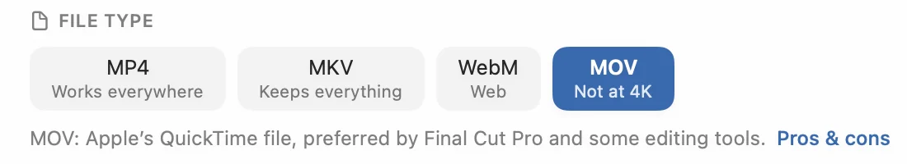
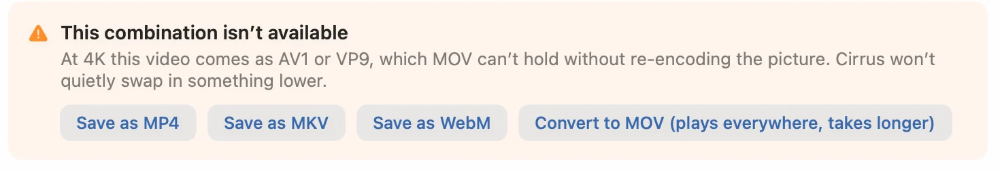

03Honest by design
It never quietly settles for less.
- No hidden downgrades. If a resolution or format isn’t offered, you’re told, with the nearest alternatives.
- No hidden re-encoding. Picture is always copied as the site provides it. Sound is converted only when the file type needs it, and the app says so.
- Plays where you expect. Digby knows which formats your Mac can play in QuickTime and Finder, and warns you when a choice won’t.

